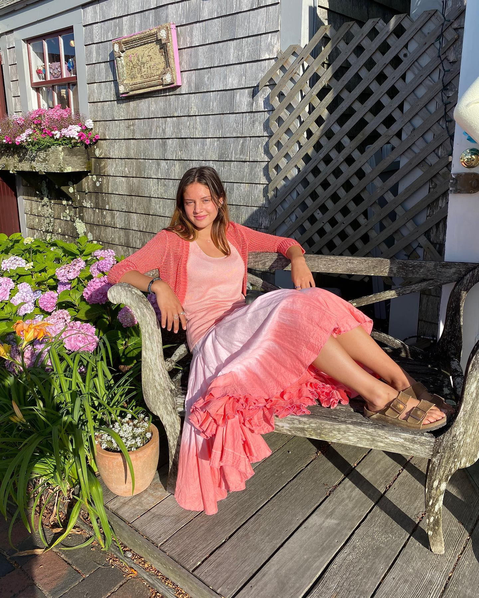
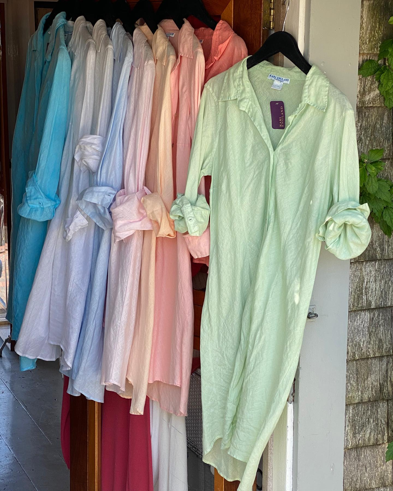
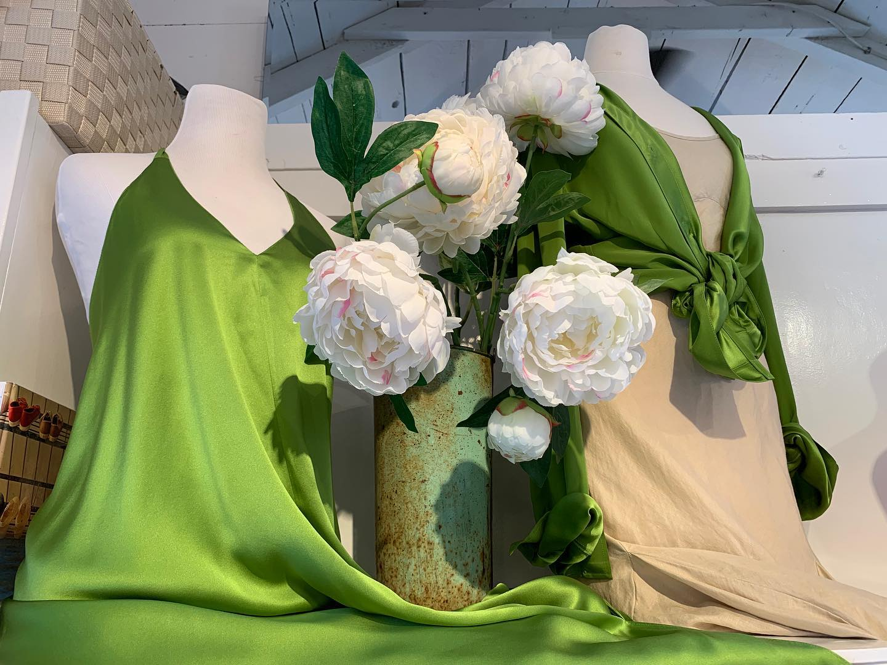
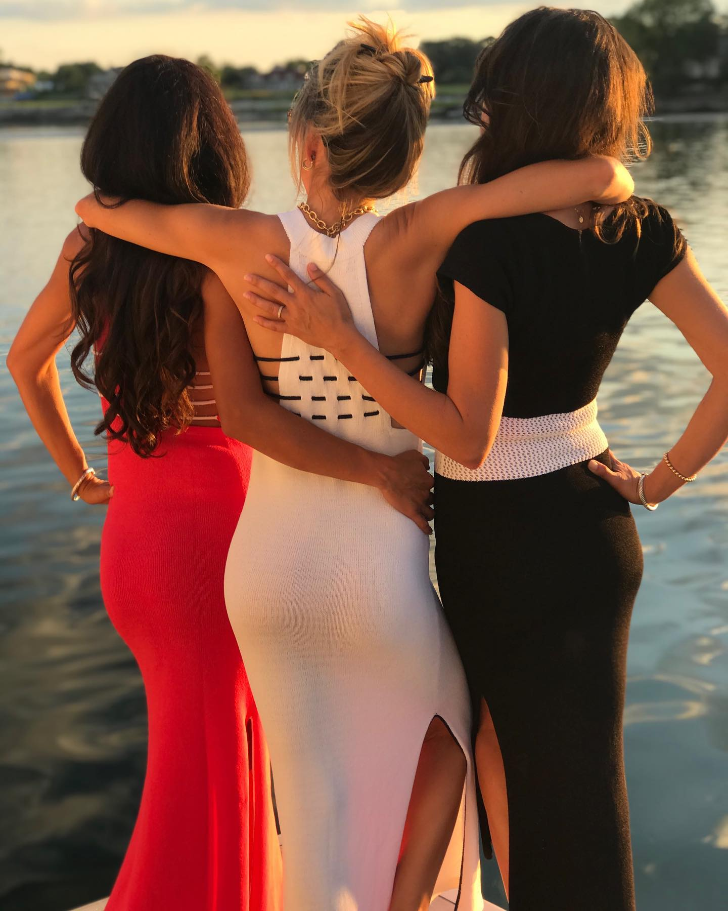
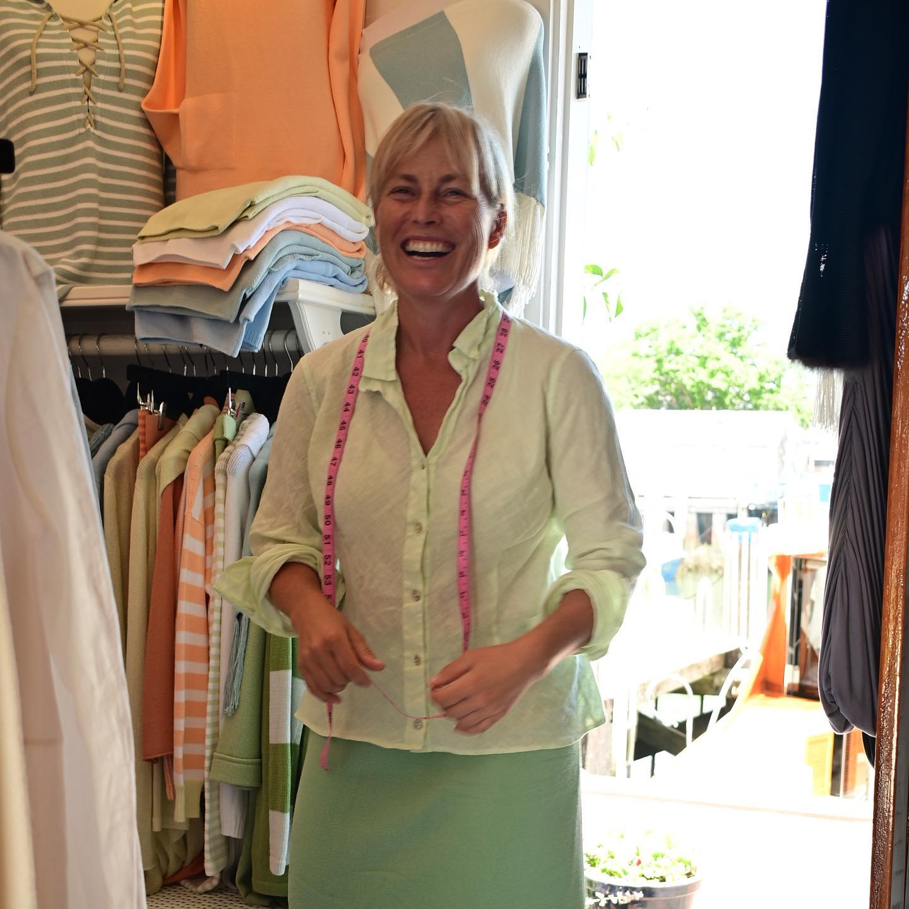
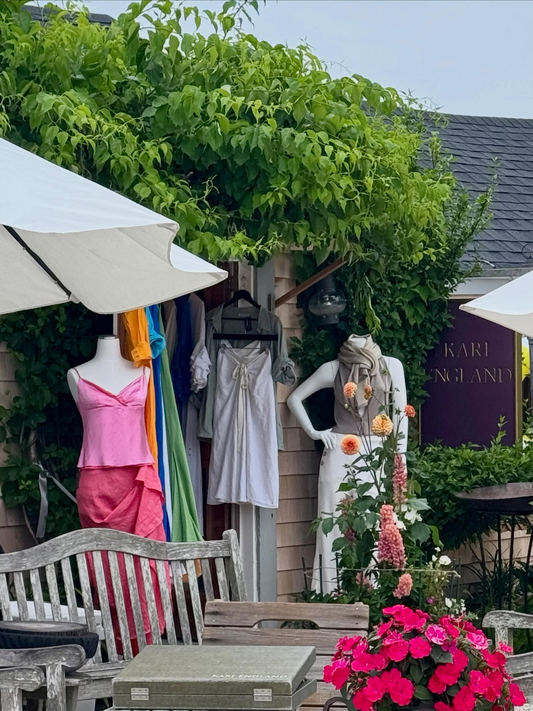

Linen and silk knitwear made in vivid, sun-soaked hues, created one piece at a time in a small studio steps from the harbor.





Every Kari England piece is loom-knit by hand right here in America, in natural linen and silk and hand-dyed in vivid, sun-soaked color. No overseas factories, no two quite alike.
Stop into the studio on Old South Wharf to see the new season in person and find your color.
